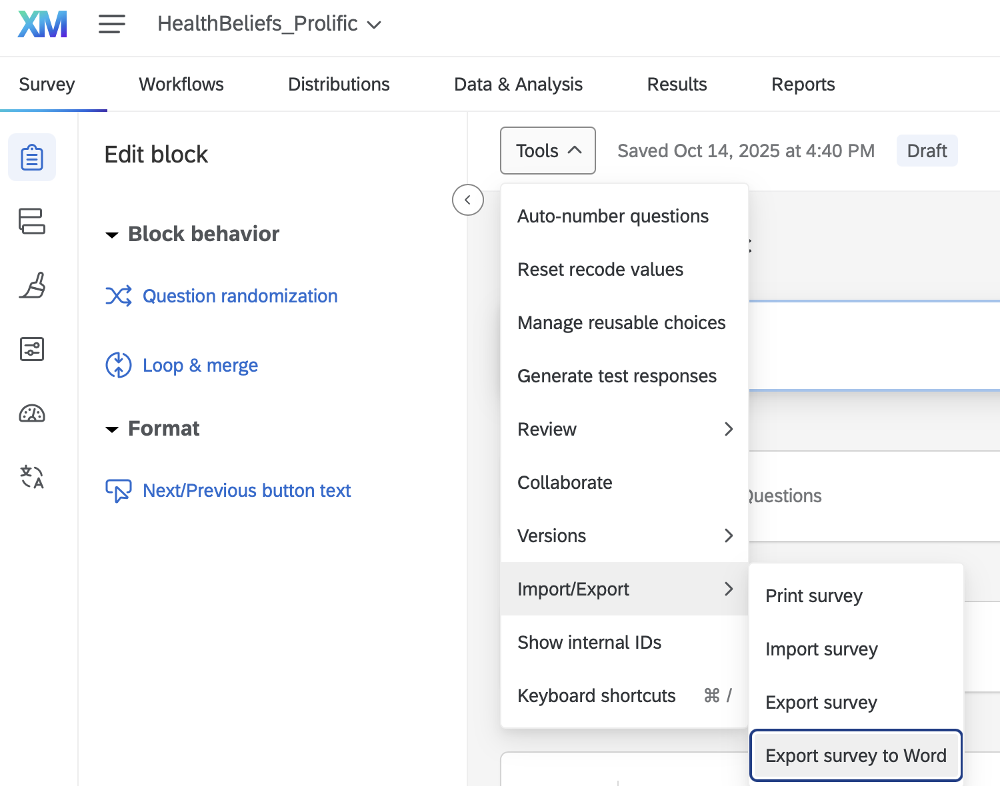
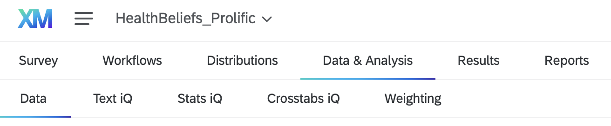
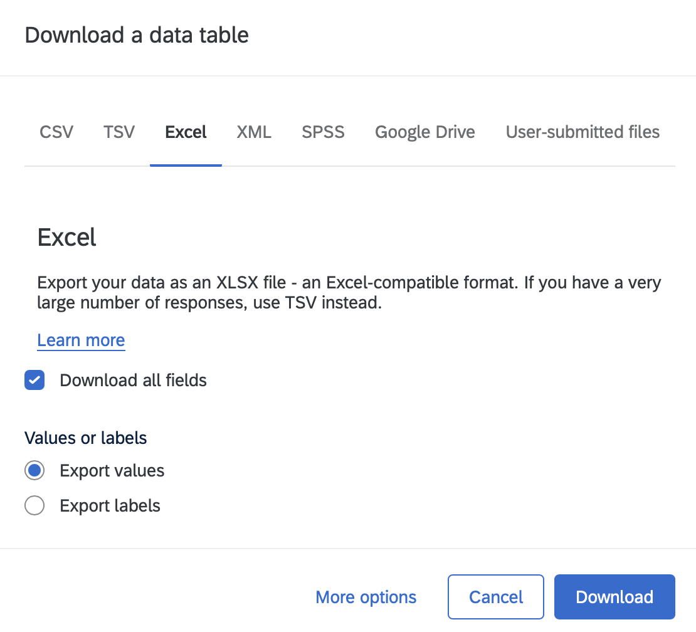
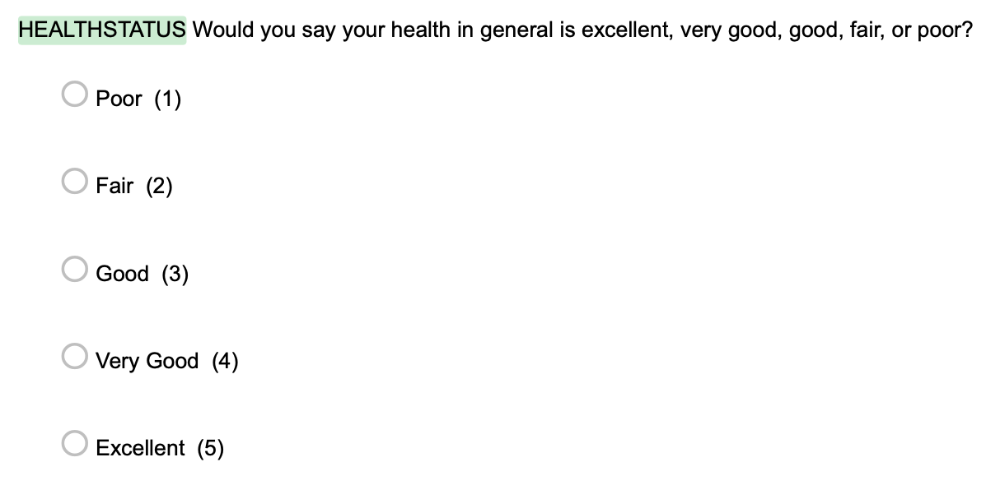

4 Export Survey Data
How to name variables and recode values in Qualtrics
This chapter guides researchers through the complete process of exporting survey data from Qualtrics for analysis in R (for quanitative track) or NVivo (for qualitative track). Researchers learn to prepare their data by naming variables and recoding values directly in Qualtrics before export, ensuring numerical values are properly assigned to response options. The chapter covers three essential exports: the survey instrument as a Word document for documentation, the raw dataset as an Excel file with numerical values, and a cleaned version with duplicate header rows removed. Researchers practice proper file naming conventions using date-stamped formats (MONTH.DAY.YEAR.data.team#.filetype) to track multiple data exports throughout their research project. By the end of this chapter, researchers will have properly formatted, team-specific datasets ready for import into data analysis software, following reproducible research standards for data management and version control.
export, qualtrics, label variables, recode values
Most of the export and renaming details were updated. Also, team-specific file conventions were included.
Some researchers collect data via survey software – such as Qualtrics, RedCap, and others. To ensure data is exported correctly, follow these specific instructions below.
4.1 Name and Recode Variables in Qualtrics
4.2 Export Survey Questions/Items (.docx)
Your files should be named:
Files for Team 2:
10.20.2025.ExportedSurvey.Daily.docx10.20.2025.ExportedSurvey.Day17.docx
Files for Team 5:
10.20.2025.ExportedSurvey.Veggie.docx10.20.2025.ExportedSurvey.Perception.docx

4.3 Export Survey Data (.xlsx)



4.4 Rename Files and Download
Once you have completed these steps, you can move to the next chapter to import your data (10.20.2025.data.team1.clean.xlsx) to R or NVivo.
Rename files using the date of the export, following MONTH.DAY.YEAR.data.team#.filetype. For example, if you export on 10.20.2025 then the correct format of the files should be: 10.20.2025.data.team1.xlsx. Then, 10.20.2025.data.team1.xlsx should be changed to 10.20.2025.data.team1.clean.xlsx after removing the second row.
It is important to include the date in your file names because you may download data at different stages of the recruitment process (e.g., after a brief pilot phase, halfway, and at the end). For example, Team 2 will continue collecting data until mid November. The final export for Team 2 will be on Monday, November 10th, resulting in a final dataset (i.e., 11.10.2025.data.team2.xlsx).
Your files should be named:
- 10.20.2025.data.team1.xlsx
- 10.20.2025.data.team1.clean.xlsx
Your files should be named:
- 10.20.2025.dailydata.team2.xlsx
- 10.20.2025.day17data.team2.xlsx
- 10.20.2025.dailydata.team2.clean.xlsx
- 10.20.2025.day17data.team2.clean.xlsx
Your files should be named:
- 10.20.2025.data.team3.xlsx
- 10.20.2025.data.team3.clean.xlsx
Your files should be named:
- 10.20.2025.data.team4.xlsx
- 10.20.2025.data.team4.clean.xlsx
Your files should be named:
- 10.20.2025.veggiedata.team5.xlsx
- 10.20.2025.perceptiondata.team5.xlsx
- 10.20.2025.veggiedata.team5.clean.xlsx
- 10.20.2025.perceptiondata.team5.clean.xlsx
4.5 Common Pitfalls to Avoid
- Naming Files – Make sure there are NO spaces anywhere in your file. Your file should be ONE object without spaces.
- Double Check – Make sure to double check everything at this stage of the process because there will be negative consequences later.